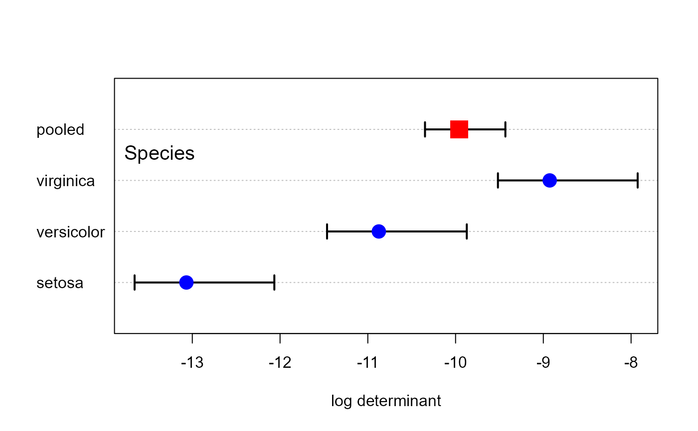
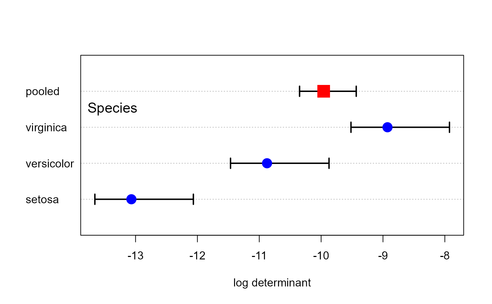

boxM() performs the Box's (1949) M-test for homogeneity of covariance
matrices obtained from multivariate normal data according to one or more
classification factors. The test compares the product of the log
determinants of the separate covariance matrices to the log determinant of
the pooled covariance matrix, analogous to a likelihood ratio test. The test
statistic uses a chi-square approximation.
Usage
boxM(Y, ...)
# S3 method for class 'formula'
boxM(Y, data, ...)
# S3 method for class 'lm'
boxM(Y, ...)
# Default S3 method
boxM(Y, group, ...)
# S3 method for class 'boxM'
print(x, ...)
# S3 method for class 'boxM'
summary(
object,
digits = getOption("digits") - 2,
cov = FALSE,
quiet = FALSE,
...
)Arguments
- Y
The response variable matrix for the default method, or a
"mlm"or"formula"object for a multivariate linear model. IfYis a linear-model object or a formula, the variables on the right-hand-side of the model must all be factors and must be completely crossed, e.g.,A:B- ...
Other arguments passed down
- data
A data frame containing the variables in the model. Used only for the formula method.
- group
A vector specifying the groups. Used only for the default method.
- x
a class
"boxM"object, for theprint()method- object
A
"boxM"object, result of a call toboxM- digits
Number of digits in printed output
- cov
Logical; if
TRUE, the covariance matrices for each group and the pooled covariance matrix are printed- quiet
Logical; if
TRUE, suppress printed output
Value
A list with class c("boxM", "htest") containing the following
components:
- statistic
the chi-square (approximate) statistic for Box's M test, where large values imply the covariance matrices differ.
- parameter
the degrees of freedom for the test statistic.
- p.value
the p-value of the test
- ngroups
the number of levels of the
groupvariable- cov
a list of the group covariance matrices, of length
ngroups- pooled
the pooled covariance matrix
- means
a matrix whose
ngroups+1rows are the means of the variables, followed by those for pooled data.- logDet
a vector of length
ngroups+1containing the natural logarithm of each matrix incov, followed by that for the pooled covariance matrix- df
a vector of the degrees of freedom for all groups, followed by that for the pooled covariance matrix
- data.name
a character string giving the names of the data, as extracted from the call
- method
the character string
"Box's M-test for Homogeneity of Covariance Matrices"
Details
As an object of class "boxM", a few methods are
available: print.boxM(), summary.boxM() and plot.boxM().
There is no general provision as yet for handling missing data. Missing data are simply removed, with a warning.
As well, the computation assumes that the covariance matrix for each group is non-singular, so that \(\log det(S_i)\) can be calculated for each group. At the minimum, this requires that \(n > p\) for each group.
Box's M test for a multivariate linear model highly sensitive to departures from multivariate normality, just as the analogous univariate test. It is also affected adversely by unbalanced designs. Some people recommend to ignore the result unless it is very highly significant, e.g., p < .0001 or worse.
In general, heterogeneity of covariance matrices can be more easily seen and understood by plotting
the covariance ellipses using covEllipses.
The summary method prints a variety of additional statistics based on
the eigenvalues of the covariance matrices. These are returned invisibly, as
a list containing the following components:
- logDet
the vector of log determinants
- eigs
eigenvalues of the covariance matrices
- eigstats
statistics computed on the eigenvalues for each covariance matrix:
- product
the product of eigenvalues, \(\prod{\lambda_i}\)
- sum
the sum of eigenvalues, \(\sum{\lambda_i}\)
- precision
the average precision of eigenvalues, \(1/\sum(1/\lambda_i)\)
- max
the maximum eigenvalue, \(\lambda_1\)
References
Box, G. E. P. (1949). A general distribution theory for a class of likelihood criteria. Biometrika, 36, 317-346.
Morrison, D.F. (1976) Multivariate Statistical Methods.
See also
leveneTest carries out homogeneity of variance
tests for univariate models with better statistical properties.
plot.boxM, a simple dot plot of the log determinants compared with that of the pooled covariance matrix, and also of other quantities computed from their eigenvalues
covEllipses plots covariance ellipses in variable space for
several groups.
Author
The default method was taken from the biotools package, Anderson Rodrigo da Silva anderson.agro@hotmail.com
Generalized by Michael Friendly and John Fox
Examples
data(iris)
# default method, using `Y`, `group`
res <- boxM(iris[, 1:4], iris[, "Species"])
res
#>
#> Box's M-test for Homogeneity of Covariance Matrices
#>
#> data: iris[, 1:4] by iris[, "Species"]
#> Chi-Sq (approx.) = 140.943, df = 20, p-value = < 2.2e-16
#>
# summary method gives details
summary(res)
#>
#> Box's M-test for Homogeneity of Covariance Matrices
#>
#> data: iris[, 1:4] by iris[, "Species"]
#>
#> Chi-Sq (approx.) = 140.943
#> df: 20
#> p-value: <2e-16
#>
#> log of Covariance determinants:
#> setosa versicolor virginica pooled
#> -13.0674 -10.8743 -8.9271 -9.9585
#>
#> Eigenvalues:
#> setosa versicolor virginica pooled
#> 1 0.2364557 0.4878739 0.695255 0.443566
#> 2 0.0369187 0.0723841 0.106551 0.086183
#> 3 0.0267964 0.0547761 0.052295 0.055352
#> 4 0.0090333 0.0097904 0.034266 0.022364
#>
#> Statistics based on eigenvalues:
#> setosa versicolor virginica pooled
#> product 2.1131e-06 1.8938e-05 0.00013275 4.7322e-05
#> sum 3.0920e-01 6.2482e-01 0.88836735 6.0747e-01
#> precision 5.5761e-03 7.3388e-03 0.01691212 1.3048e-02
#> max 2.3646e-01 4.8787e-01 0.69525484 4.4357e-01
# visualize (this is what is done in the plot method)
dets <- res$logDet
ng <- length(res$logDet)-1
dotchart(dets, xlab = "log determinant")
points(dets , 1:4, cex=c(rep(1.5, ng), 2.5), pch=c(rep(16, ng), 15),
col= c(rep("blue", ng), "red"))
 # plot method gives confidence intervals for logDet
plot(res, gplabel="Species")

# formula method
boxM( cbind(Sepal.Length, Sepal.Width, Petal.Length, Petal.Width) ~ Species,
data=iris)
#>
#> Box's M-test for Homogeneity of Covariance Matrices
#>
#> data: iris
#> Chi-Sq (approx.) = 140.943, df = 20, p-value = < 2.2e-16
#>
### Skulls data
data(Skulls)
# lm method
skulls.mod <- lm(cbind(mb, bh, bl, nh) ~ epoch, data=Skulls)
skulls.boxM <- boxM(skulls.mod) |>
print()
#>
#> Box's M-test for Homogeneity of Covariance Matrices
#>
#> data: Y by group
#> Chi-Sq (approx.) = 45.6672, df = 40, p-value = 0.2483
#>
summary(skulls.boxM)
#>
#> Box's M-test for Homogeneity of Covariance Matrices
#>
#> data: Y by group
#>
#> Chi-Sq (approx.) = 45.66723
#> df: 40
#> p-value: 0.25
#>
#> log of Covariance determinants:
#> c1850BC c200BC c3300BC c4000BC cAD150 pooled
#> 11.222 10.469 11.032 11.477 12.153 11.605
#>
#> Eigenvalues:
#> c1850BC c200BC c3300BC c4000BC cAD150 pooled
#> 1 26.931 35.9064 28.3992 34.8234 37.332 29.462
#> 2 19.075 16.9560 22.0306 30.3339 28.600 21.441
#> 3 13.207 13.6751 15.5959 18.4358 14.800 18.779
#> 4 11.014 4.2292 6.3364 4.9517 12.003 9.246
#>
#> Statistics based on eigenvalues:
#> c1850BC c200BC c3300BC c4000BC cAD150 pooled
#> product 74729.0725 35211.6576 61827.9462 96431.2960 189666.582 1.0968e+05
#> sum 70.2276 70.7667 72.3621 88.5448 92.734 7.8927e+01
#> precision 3.9053 2.5227 3.3053 3.1459 4.703 4.1324e+00
#> max 26.9311 35.9064 28.3992 34.8234 37.332 2.9462e+01
# plot method gives confidence intervals for logDet
plot(res, gplabel="Species")

# formula method
boxM( cbind(Sepal.Length, Sepal.Width, Petal.Length, Petal.Width) ~ Species,
data=iris)
#>
#> Box's M-test for Homogeneity of Covariance Matrices
#>
#> data: iris
#> Chi-Sq (approx.) = 140.943, df = 20, p-value = < 2.2e-16
#>
### Skulls data
data(Skulls)
# lm method
skulls.mod <- lm(cbind(mb, bh, bl, nh) ~ epoch, data=Skulls)
skulls.boxM <- boxM(skulls.mod) |>
print()
#>
#> Box's M-test for Homogeneity of Covariance Matrices
#>
#> data: Y by group
#> Chi-Sq (approx.) = 45.6672, df = 40, p-value = 0.2483
#>
summary(skulls.boxM)
#>
#> Box's M-test for Homogeneity of Covariance Matrices
#>
#> data: Y by group
#>
#> Chi-Sq (approx.) = 45.66723
#> df: 40
#> p-value: 0.25
#>
#> log of Covariance determinants:
#> c1850BC c200BC c3300BC c4000BC cAD150 pooled
#> 11.222 10.469 11.032 11.477 12.153 11.605
#>
#> Eigenvalues:
#> c1850BC c200BC c3300BC c4000BC cAD150 pooled
#> 1 26.931 35.9064 28.3992 34.8234 37.332 29.462
#> 2 19.075 16.9560 22.0306 30.3339 28.600 21.441
#> 3 13.207 13.6751 15.5959 18.4358 14.800 18.779
#> 4 11.014 4.2292 6.3364 4.9517 12.003 9.246
#>
#> Statistics based on eigenvalues:
#> c1850BC c200BC c3300BC c4000BC cAD150 pooled
#> product 74729.0725 35211.6576 61827.9462 96431.2960 189666.582 1.0968e+05
#> sum 70.2276 70.7667 72.3621 88.5448 92.734 7.8927e+01
#> precision 3.9053 2.5227 3.3053 3.1459 4.703 4.1324e+00
#> max 26.9311 35.9064 28.3992 34.8234 37.332 2.9462e+01